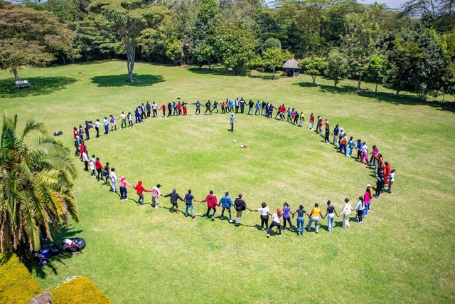
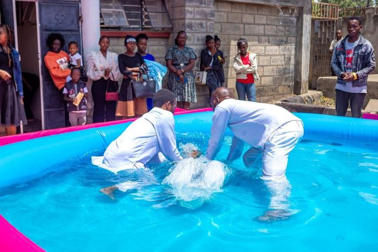
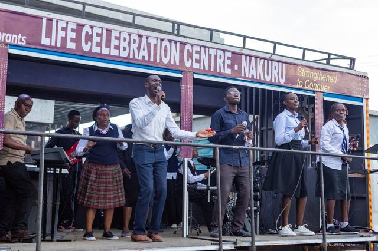

Church life, captured.
Moments from Sundays, Praise Express, fellowship days, baptisms and the Cutting Edge Conference. Select a photograph in the film strip to view it full screen.
Featured moments





Life at LCC
Fellowship, worship & new life
Fellowship days, Praise Express, baptisms and outreach across Nakuru.
PhotosLCC media teamFilm strip
Drag through the year
Watch the moments
Moments from the streams
Photographs by the LCC media team, published with the church's approval; stream frames come from LCC's own YouTube services. If you appear in a photograph and would like it removed, please contact the church office.